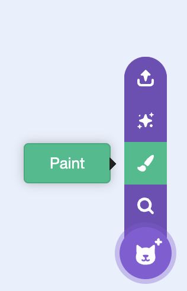
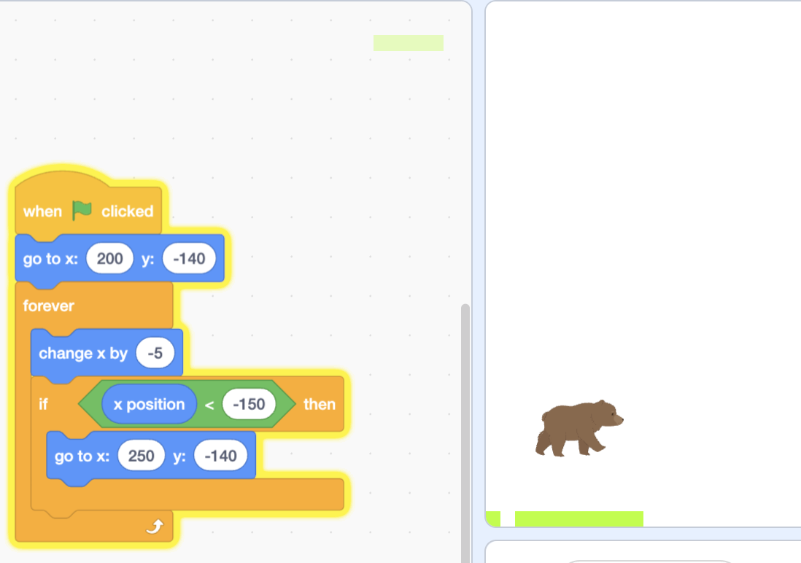
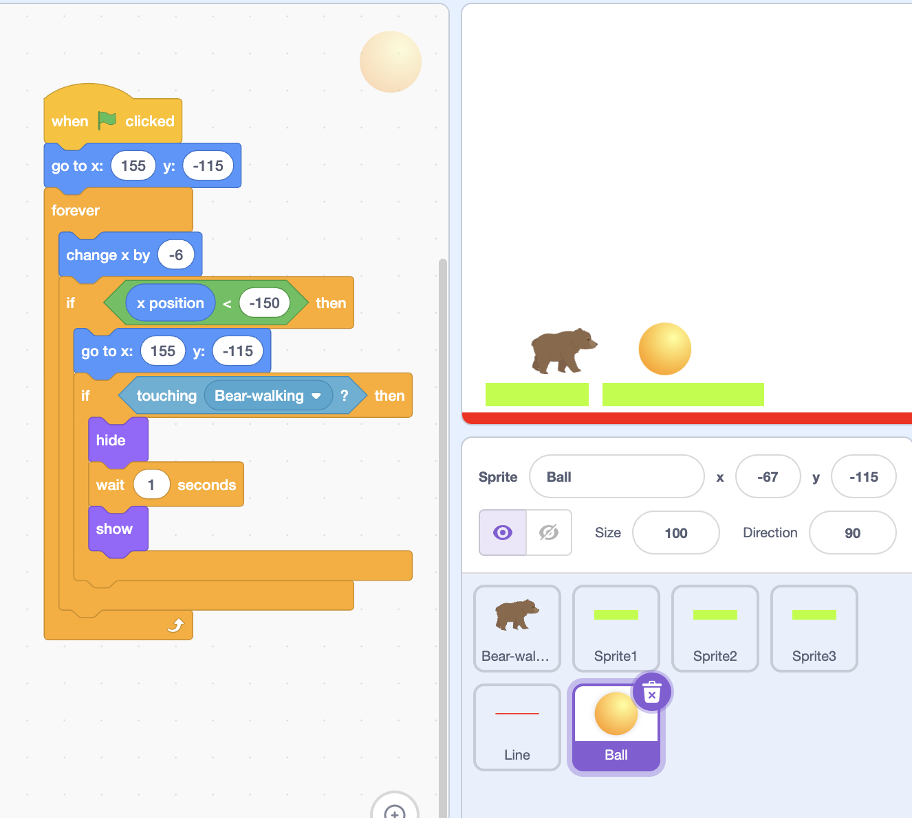

Learning Target
- Make ground blocks and platforms
- Collect coins using collision
- Make blocks move from right to left to act like a side-scrolling game
Success Criteria
- Player lands on blocks
- Coins disappear when touched
- New blocks appear continuously from the right
Materials
- Scratch
Step 1: Reduce the Size of the Bear

Reduce the size of the bear sprite using the set
size to block or by adjusting the size
property in the sprite info panel.
Step 2: Paint a Square Block
- Click the "Paint New Sprite" button (looks like a paintbrush icon) in the sprite area to add a new sprite.
- The paint editor will open. Click the "Rectangle" tool (square/rectangle icon) in the drawing tools.
- Click and drag on the canvas to draw a square or rectangle. This will be your ground block.
- You can color it green to look like grass, or any color you like.
- Go to the block sprite's code area. Add this code to position the block:
Step 3: Add Right-to-Left Scrolling Code
Go to the block sprite's code area and add this code to make blocks move from right to left:

when green flag clicked
go to x: (200) y: (-140)
forever
change x by (-5)
if <x position < -250> then
go to x: (250) y: (-140)
end
end
How the looping works: The block moves left (change x by -5). When it reaches the left edge of the screen (x position less than -250), the code automatically teleports it back to the right side (x: 250). This creates a continuous loop so new blocks keep appearing!
Duplicate this block to make a row. Now it feels like moving forward.
Step 4: Add a Coin to Collect
Create a new coin sprite (click "Choose a Sprite" and pick a coin, or use "Paint New Sprite" to draw one). Go to the coin sprite's code area and add this code:

when green flag clicked
go to x: (155) y: (-115)
forever
change x by (-6)
if <x position < -150> then
go to x: (155) y: (-115)
end
if <touching [Bear-walking v]?> then
hide
wait (1) seconds
show
end
end
How it works: The coin scrolls from right to left at speed -6 (slightly faster than blocks which use -5). When the bear touches the coin, it disappears for 1 second, then reappears to collect again!
Extra Challenges
- Add more coins to collect
- Add a score - make a variable and add 1 point when you collect a coin
- Make coins reappear - add scrolling code to make them move with blocks
- Add clouds or trees for background
- Change block speed (change -5 to -3 for slower, or -7 for faster)
Think + Talk
- What makes this feel like a real platformer?
- Why do the blocks move instead of the player?
- How would you add an enemy later?